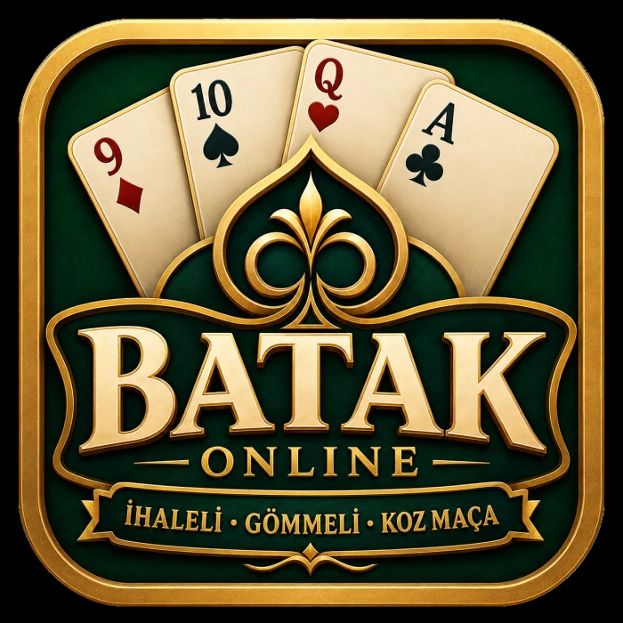
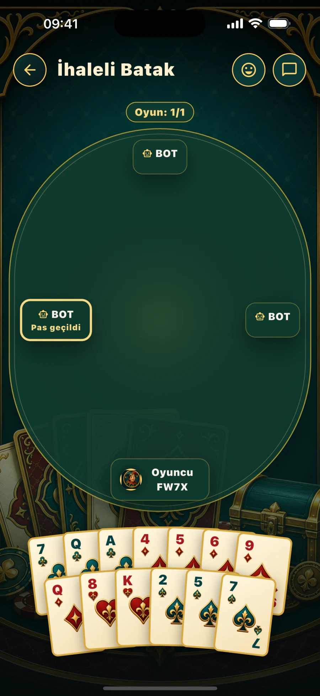
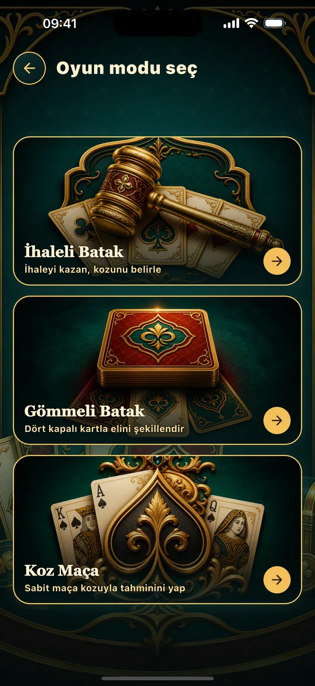
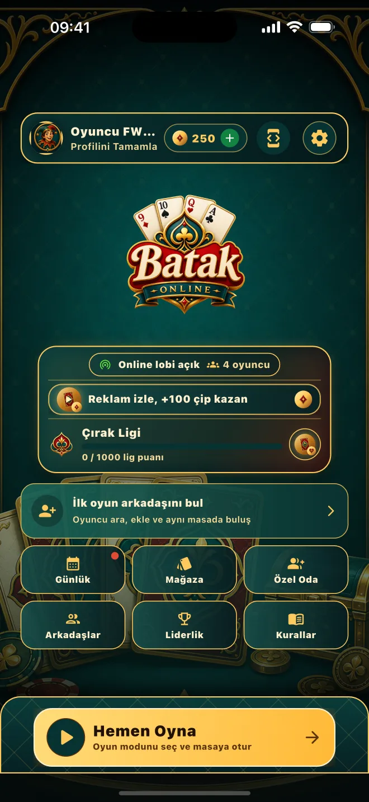
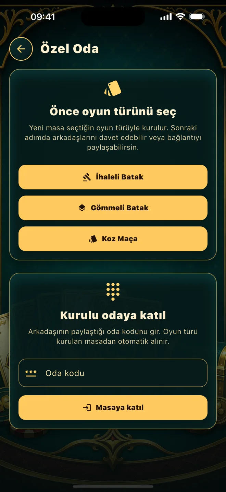
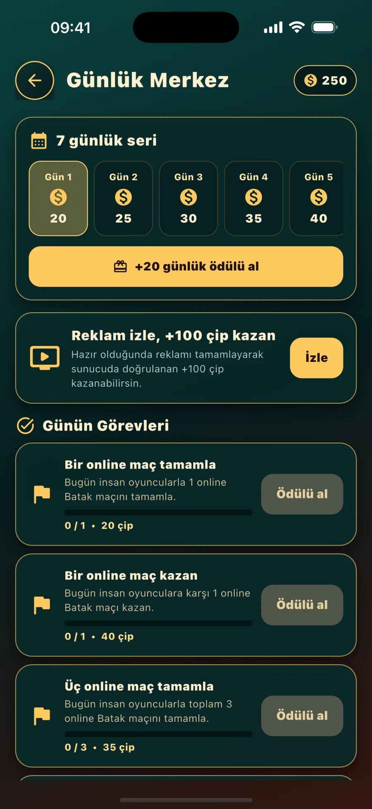
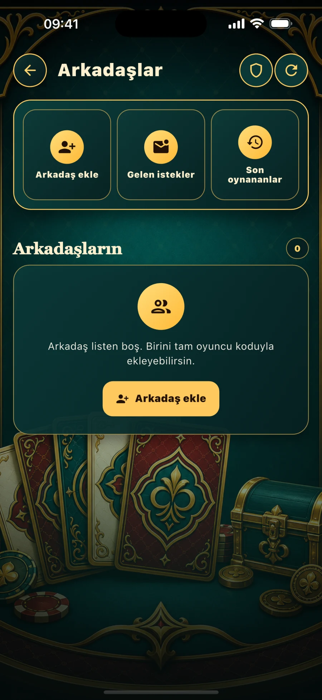
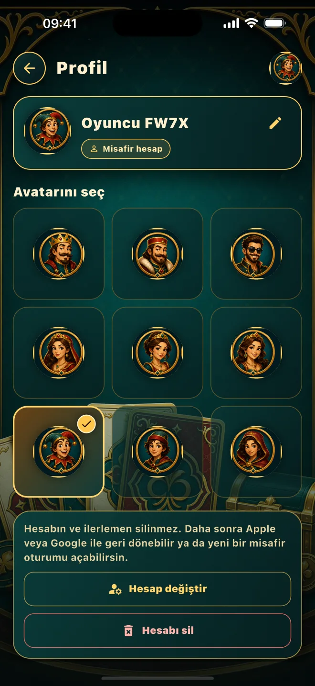

Hızlı eşleşme
Dört kişilik masaya katılın; bağlantınız kesilirse aktif maçınıza geri dönün.

Canlı çevrim içi kart oyunu
İhaleli Batak, Gömmeli Batak ve Koz Maça. Gerçek oyuncularla eşleşin, arkadaşlarınızı özel masaya çağırın ve liglerde yükselin.
Oyunun içinde
Hızlı maç akışı, kalıcı profil, sosyal özellikler ve sunucu tarafından doğrulanan hamleler tek deneyimde buluşur.
Dört kişilik masaya katılın; bağlantınız kesilirse aktif maçınıza geri dönün.
Arkadaşlarınızı davet edin, boş koltukları botlarla tamamlayın ve birlikte oynayın.
Maç sonuçlarınızı, çip cüzdanınızı, günlük ödülleri ve lig ilerlemenizi koruyun.
Arkadaş ekleyin, özel masa daveti gönderin, hazır mesaj ve emoji tepkilerini kullanın.
Üç farklı masa
Her mod kendi teklif, koz ve puanlama akışını sunar; kurallar tüm oyuncular için aynı sürümlü kural setiyle uygulanır.
Teklifinizi verin, ihaleyi kazanın, kozunuzu seçin ve taahhüdünüzü tamamlayın.
Yerdeki kartları değerlendirin, elinizi yeniden kurun ve rakiplerinizden daha fazla el alın.
Sabit kozla stratejinizi kurun ve doğru zamanda risk alarak masanın önüne geçin.
Gerçek uygulama ekranları
Oyun modlarından özel odalara, günlük ödüllerden arkadaşlarınıza kadar Batak: Online'ın güncel ekranlarını inceleyin.

Sunucu otoriteli dört kişilik masa

İhaleli, Gömmeli ve Koz Maça

Profil, lig, çip ve hızlı başlangıç

Arkadaşlarınızla kendi masanız

Düzenli ilerleme ve çip ödülleri

Oyuncu bulun, ekleyin ve davet edin

Avatarınız, istatistikleriniz ve kimliğiniz
Misafir olarak hemen başlayın veya Apple ve Google hesabınızla profilinizi koruyun.
App StoreGiriş, eşleşme, çip, bağlantı ve hesap işlemleri için çözüm adımlarını inceleyin.
Destek sayfasına gidinİşlenen verileri, üçüncü taraf hizmetleri ve kalıcı hesap silme sürecini öğrenin.
Gizlilik politikasını okuyunGeliştirici
Batak: Online, Ümit Çağdaş tarafından güvenli, sosyal ve canlı bir mobil kart oyunu olarak geliştirildi.